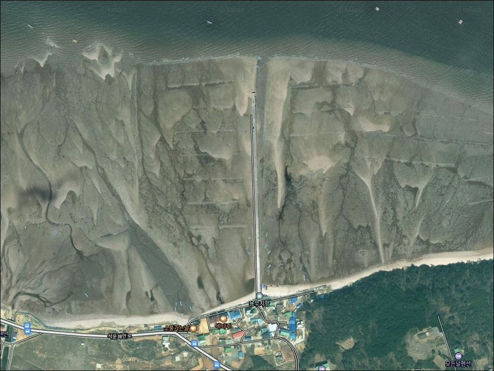
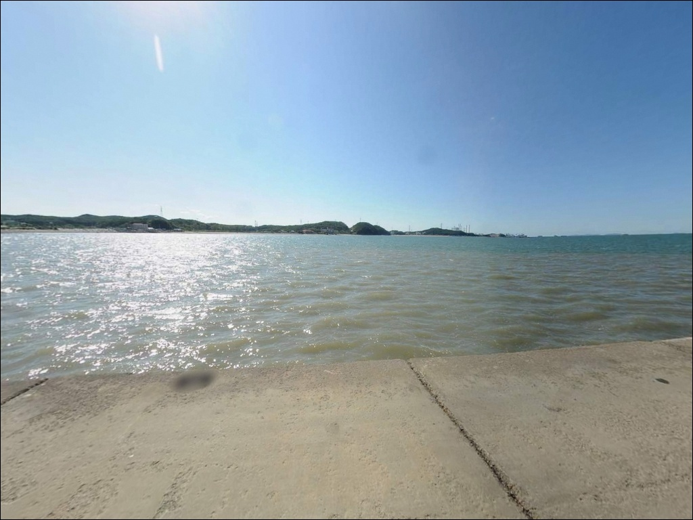
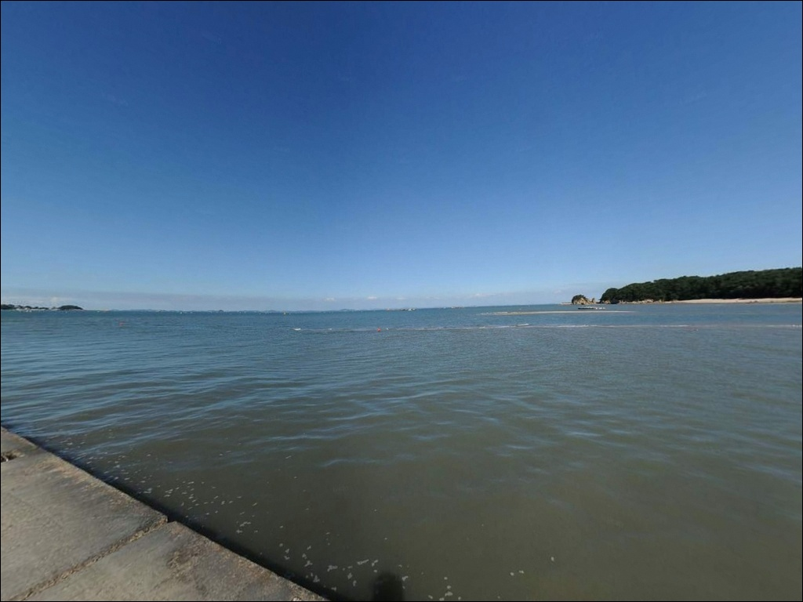
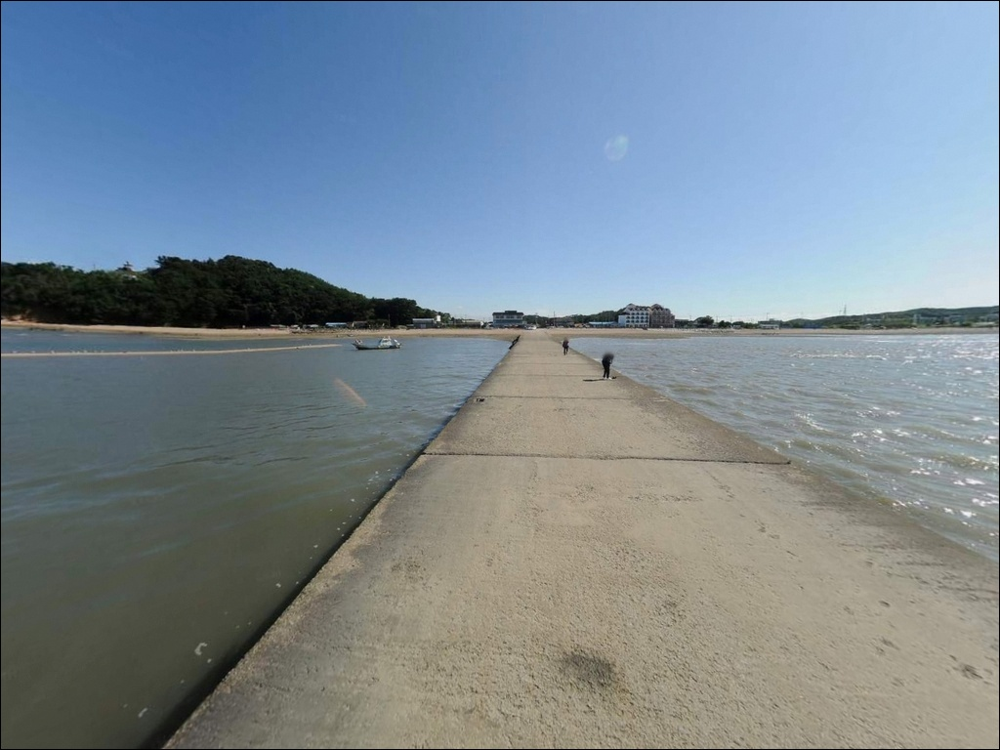
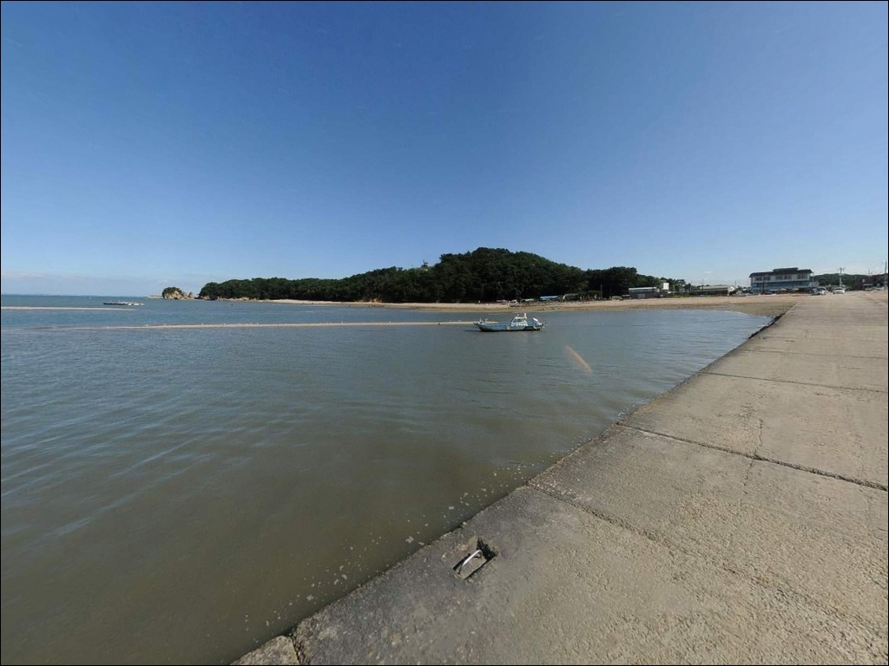
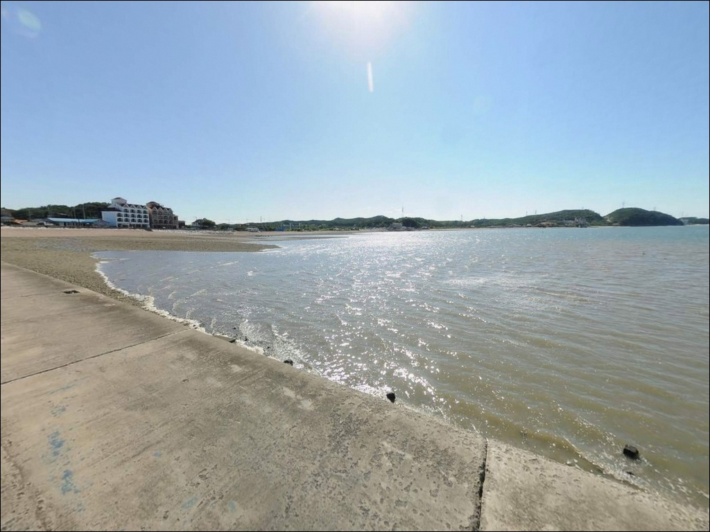
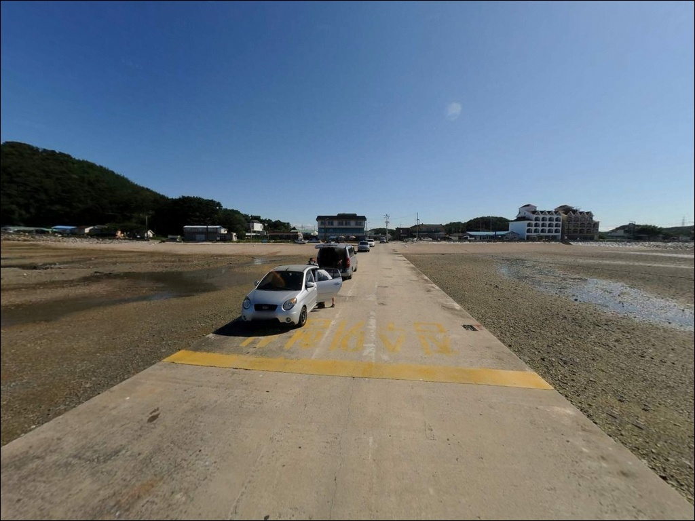
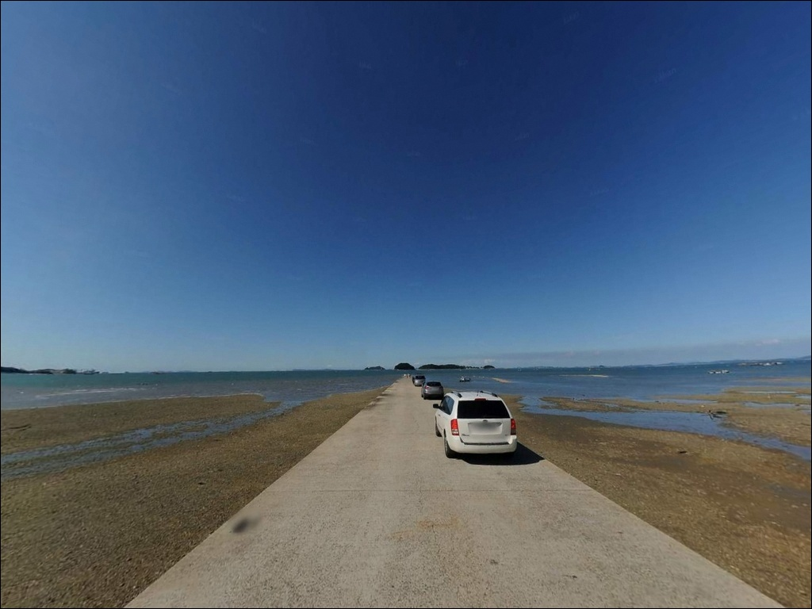
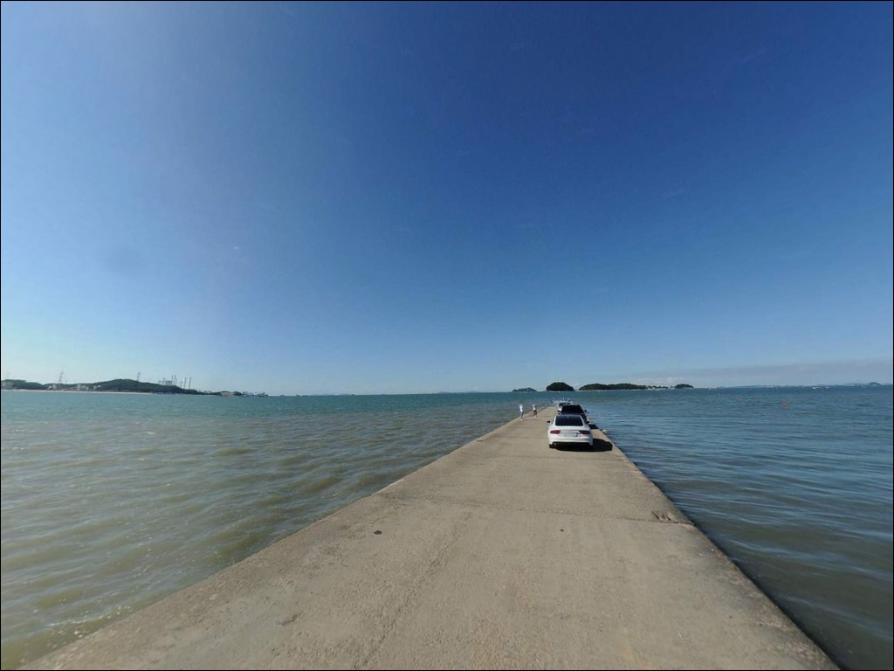

용무치항, 충남 당진시 한적한 분위기 속 차박, 낚시를 함께 하기 좋은 곳
이 페이지에는 광고(제휴 링크 포함)가 있으며, 광고 링크를 통해 구매하면 운영자가 판매 수익 또는 수수료를 받을 수 있습니다. 포인트 사진: 카카오맵 스카이뷰·로드뷰. 이 페이지의 지도·사진 이미지는 카카오맵의 실제 서비스 이미지와 다를 수 있습니다.


포인트 안내
용무치항
충남 당진시 석문면 장고항리 851-52
물때 확인 없이 용무치항을 찾으면
썰물이 빠진 선착장 앞에
넓은 갯벌만 드러나 있는 상황과 마주하게 됩니다.
서해 대조차 환경 특성상 썰물 때는
채비를 던져도 수심 자체가 형성되지 않는 구간이
생기는 포인트이기 때문입니다.
밀물 전후 타이밍 계산이 방문 성패를 가르는
포인트입니다.
장고항과 왜목마을 사이에 자리한 용무치항은
석문 해안도로 드라이브 코스가 관통하는
아산만 연안의 소규모 어촌 포구입니다.
선착장에 서면 국화도와 도지섬이 조망되는 구조로,
외해 직접 노출보다는 만 안쪽에 위치한
내만형 포구에 해당합니다.
이 글은 용무치항의 진입 환경, 낚시 여건,
차박 체류 조건에 집중합니다.
조황 단정이나 특정 어종 보장은
이 글의 범위에 포함되지 않습니다.

1. 진입 동선과 포인트 접근성
용무치항은 석문 해안도로(포장도로)를 통해
직접 접근이 가능한 구조입니다.
장고항에서 왜목마을 방향으로 해안도로를 따라
이동하면 포구가 자연스럽게 나오는 동선이며,
일반 승용차 기준 진입에 큰 어려움은 없는 편입니다.
다만 소규모 어촌 포구 특성상 도로 폭이
구간별로 좁아지는 경우가 있을 수 있습니다.
대형 SUV나 캠핑 장비를 탑재한 차량이라면
출발 전 위성지도로 진입로와 회차 공간을
미리 확인하고 가는 편이 안전합니다.
주차는 선착장 인근 공터를 활용하며,
소형차 5대 수준의 공간이 확인됩니다.
어촌 포구 구조상 어선 하역·입출항 동선이
주차 공간과 겹칠 수 있어,
자리를 잡기 전에 어선 이동 방향을
먼저 살펴두는 것이 기본입니다.

2. 차박 환경과 야간 체류 여건
장고항과 왜목마을 사이에 낀 구조 덕분에
관광 인파가 몰리는 포인트는 아닙니다.
야간에는 차량 통행이 적고 마을 규모가 작아
프라이버시는 상대적으로 양호한 편입니다.
다만 어선 야간 작업이 이뤄지는 경우가 있어
항구 소음이 전혀 없다고 단정하기는 어렵습니다.
가로등이 일부 있을 가능성이 있으나
항로 등부표 수준의 조명이 중심일 수 있어,
개인 조명 장비는 반드시 준비해야 합니다.
아산만 내만 구조 특성상 외해 직접 노출은
적은 편이나, 바람 방향에 따라
체감 조건이 달라질 수 있습니다.
주차 공간이 소형차 5대 수준으로 제한적이므로
차박 여건이 여의치 않을 경우를 대비해
왜목마을 공영주차장을 대체 체류지로
미리 파악해두는 것이 실용적입니다.
차박보다는 당일 낚시 후 철수하는
출조 베이스 용도에 더 잘 맞는 포인트입니다.


3. 주변 편의시설 및 인프라 현황
용무치항 자체에는 확인된 편의시설 정보가 없습니다.
소규모 어촌 포구 특성상
완전 자급 체제로 진입하는 것이
현실적인 준비 방식입니다.
식수, 얼음, 낚시 소품, 비상약품, 연료 모두
출발 전에 갖춰야 합니다.
왜목마을 방면으로 이동하면
왜목길 45-1에 세븐일레븐 편의점이 있어
기본 식료품과 음료 보충이 가능합니다.
장고항 수산물 센터 일대에서는
신선한 수산물 구매와 식사가 가능하며,
두 곳을 묶어이동 동선을 미리 파악해두면
출조 전 준비가 효율적입니다.
차박·캠핑을 함께 고려한다면
석문해안로 159에 위치한 해와랑캠핑장이
인근 참고 시설로 확인됩니다.
화장실과 개수대가 갖춰진 곳으로 안내되어 있어,
노지 체류보다 편의를 원하는 경우
참고할 수 있는 선택지입니다.

4. 방문 전 준비사항과 현장 체크 포인트
용무치항에서 가장 먼저 확인할 것은 물때입니다.
서해 대조차 환경 특성상 만조와 간조의 수면 차이가
낚시 가능 여부 자체를 결정합니다.
바다타임에서 당진 석문면 기준 물때를 확인하고,
밀물 전후 1~2시간을 핵심 타이밍으로 잡아
출발 시각을 역산하는 것이 기본 전략입니다.
조차란 만조와 간조 시 수면 높이의 차이를 말하며,
서해는 국내에서 조차가 가장 큰 해역에 속합니다.
썰물이 충분히 진행된 이후에는
선착장 주변 수심이 얕아져 채비 운용이
어려워지는 시간대가 발생합니다.
사리 전후 만조 타이밍에 집중하고,
간조 2시간 전에는 철수 여부를 판단하는 것이
이 포인트 운용의 기본입니다.
선착장 끝단은 만조 시 수면이 가까워지는 구조로,
밀물 수위 상승 속도를 수시로 확인해야 합니다.
구명조끼는 낚시 중 항시 착용하고,
야간에는 헤드랜턴과 미끄럼 방지 신발을
반드시 챙겨야 합니다.
어선 작업 구간 진입은 절대 금지입니다.

5. 밀물 전후가 낚시 타이밍을 결정하는 이유
용무치항은 아산만 안쪽 만 구조에 위치한 포구입니다.
외해로 바로 열린 구조가 아니라
내만 쪽에 자리해 있어
파도 직접 노출은 적은 편이지만,
서해 특유의 조차 영향이 낚시 여건 전체를 지배하는
환경입니다.
썰물이 진행되면 선착장 주변으로
넓은 갯벌이 드러납니다.
이 시간대에는 수심이 충분히 형성되지 않아
원투 채비를 던져도 바닥이 얕게 닿는 구간이 생깁니다.
반면 밀물이 들어올수록
선착장 끝단 방향 수심이 확보되어
채비 운용이 가능한 조건이 만들어집니다.
선착장에서는 국화도와 도지섬 방향으로
탁 트인 수면이 형성됩니다.
이 방향이 원투 채비를 보내기 적합한 구간이며,
선착장 주변 구조물 근처는
루어 라이트게임 자리로도 활용할 수 있습니다.
최신 조황은 가기 전에 꼭 검색해보시기 바랍니다.


6. 용무치항에 어울리는 낚시 스타일
원투낚시란 무거운 봉돌을 달아 채비를 멀리 캐스팅한 뒤
바닥 어종의 입질을 기다리는 낚시 방식입니다.
이 포인트 지형 조건과 가장 잘 맞는 스타일로,
선착장 끝단에서 외측 방향으로 채비를 보내는 방식이
밀물 타이밍과 맞물려 효과적입니다.
갯지렁이 채비를 기본으로 준비하면
입문자부터 경험자까지 대응이 가능합니다.
찌낚시는 밀물이 들어오는 타이밍에
선착장 주변 중층~표층을 노리는 방식으로 시도해볼 만합니다.
수면이 고요해지는 만조 전후
잔잔한 시간대에 찌를 세워두면
숭어나 기타 회유성 어종의 입질을
기대해볼 수 있는 조건이 형성됩니다.
루어 라이트게임은 선착장 구조물 주변을
소형 지그헤드 채비로 탐색하는 방식이 어울립니다.
내만 포구 구조 특성상 대형 루어보다
가벼운 채비 위주가 이 환경에 더 맞습니다.
계절에 따라서는 쭈꾸미가
인근 갯벌·연안에서 기대되는 어종으로
알려진 서해권 패턴이 이 포인트에도 적용될 수 있습니다.

7. 대안 포인트와 플랜 B 동선
용무치항의 물때나 주차 여건이 여의치 않을 때
가장 먼저 이동할 곳은 장고항입니다.
용무치항에서 약 2km 거리에 위치한
국가어항으로, 신·구 방파제와 갯바위 구간이
고루 갖춰진 당진 대표 낚시 포인트입니다.
선상낚시 업체도 운영 중이라
연안 낚시 외의 선택지까지 넓어집니다.
왜목마을 노적봉 끝자락 갯바위는
갯바위 낚시를 선호하는 경우에 참고할 수 있는 구간입니다.
장고항과 왜목마을 사이에 형성된 지점으로,
두 포인트를 함께 묶어 이동하면
하루 동선을 효율적으로 구성할 수 있습니다.
석문방조제도 같은 당진 서해권에서
원투낚시와 루어 모두 시도할 수 있는
대안 포인트로 알려져 있습니다.
용무치항이 기대에 못 미쳤을 때
장고항을 거쳐 석문방조제까지 이어지는
동선을 미리 머릿속에 그려두면
현장 판단이 빨라집니다.

물때를 알고 가면 이야기가
달라지는 포인트입니다
원투낚시나 라이트게임을 즐기는 낚시인이라면
용무치항은 조용히 혼자 자리를 잡기 좋은
서해 내만형 포인트입니다.
장고항과 왜목마을 사이에 끼어 있어
상대적으로 한적한 분위기가 유지되고,
인근 대형 포인트를 플랜 B로 두고
부담 없이 탐색하기에 알맞은 구조입니다.
다만 물때 계산 없이 찾으면
드넓은 갯벌 앞에서 시간을 낭비하게 됩니다.
바다타임으로 밀물 타이밍을 먼저 잡고,
완전 자급 준비와 주차 공간 확인을 갖추면
기억에 남는 조용한 서해 출조가 될 수 있는 곳입니다.
낚시를 마치고 국화도가 보이는 선착장 옆에서
하룻밤 머물고 싶다면,
왜목마을 공영주차장을 차박 대안으로
미리 파악해두는 것으로 준비는 충분합니다.